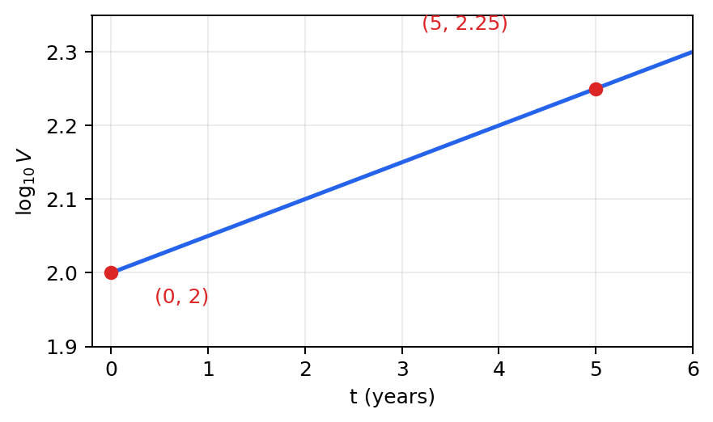

The share price, £$V$, of a company is being monitored.
A graph is drawn of $\log_{10}V$ against $t$, where $t$ is the number of years after monitoring began.
The graph is a straight line passing through the points $(0,2)$ and $(5,2.25)$.
Using this information,
(a) find an equation for the line in the form $$\log_{10}V=mt+c$$ where $m$ and $c$ are constants. (2)
(b) Write the answer to part (a) in the form $$V=ab^t$$ where $a$ and $b$ are constants to be found. Give the exact value of $a$ and the value of $b$ to 3 significant figures. (3)
When $t=T$, the rate of increase in the share price of the company was £50 per year.
(c) Find the value of $T$, giving your answer to the nearest integer.
(Solutions relying entirely on calculator technology are not acceptable.) (4)
[9 marks: (a) 2, (b) 3, (c) 4]
Strategy. Treat $t$ as the horizontal variable and $\log_{10}V$ as the vertical variable, calculate the gradient from the two supplied points, and use the point with $t=0$ to read the intercept directly.
Why this method applies. The graph is explicitly of $\log_{10}V$ against $t$, so the straight-line coordinates are $(t,\log_{10}V)$. The standard point-gradient form applies to these transformed variables.
Formula or definition first. Use $m=(y_2-y_1)/(x_2-x_1)$ and $y=mx+c$, with $y=\log_{10}V$ and $x=t$.
Full intermediate working. Compute $$m=\frac{2.25-2}{5-0}=\frac{0.25}{5}=0.05.$$ At $t=0$, $\log_{10}V=2$, so $c=2$. Therefore $$\boxed{\log_{10}V=0.05t+2}.$$ Substitution of $t=5$ gives $0.25+2=2.25$, exactly recovering the second point.
Difficult transition. The difficult transition is preserving the transformed vertical variable. Calling the vertical coordinate $V$ would imply $V=0.05t+2$, a different linear model that contradicts the labelled graph.

Final check / check back. Both printed points satisfy the boxed equation exactly. The positive slope also matches an increasing logged share price. The units are log-value per year, not pounds per year at this stage.
Strategy. Raise 10 to both sides, split the sum in the exponent into a product, and rewrite the $t$-dependent factor as a constant base raised to $t$. Then distinguish exact and rounded forms.
Why this method applies. The inverse of $\log_{10}$ is exponentiation with base 10. The requested model $ab^t$ requires every part independent of $t$ to be placed in $a$ and the repeated annual factor to be placed in $b$.
Formula or definition first. Use $\log_{10}V=k\iff V=10^k$ and the index laws $10^{p+q}=10^p10^q$ and $10^{ct}=(10^c)^t$.
Full intermediate working. From the carry-in, $$V=10^{0.05t+2}=10^2\,10^{0.05t}=100(10^{0.05})^t.$$ Thus the exact constant is $a=100$, and the exact base is $b=10^{0.05}$. Numerically $10^{0.05}=1.122018\ldots$, so to three significant figures $b=1.12$. Therefore $$\boxed{V=100(10^{0.05})^t,\quad a=100,\quad b=1.12\text{ (3 s.f.)}}.$$
Difficult transition. The difficult transition is $10^{0.05t}=(10^{0.05})^t$. Leaving $0.05t$ unsplit hides the required $b^t$ structure; rounding the base before later differentiation changes the model.
Final check / check back. At $t=0$, the exact model gives $V=100$, so $\log_{10}V=2$ as required. At $t=5$, it gives $V=100\cdot10^{0.25}$, whose base-10 logarithm is $2.25$.
Strategy. Interpret “rate of increase” as a positive derivative, differentiate the exact model, set the derivative equal to 50, solve symbolically with logarithms, and round only the final value of $T$ to the nearest integer.
Why this method applies. A rate with respect to years is $dV/dt$. The exact model is exponential, so differentiation introduces a logarithmic factor. Because the rate is an increase, the equation is $dV/dt=+50$, not negative 50.
Formula or definition first. Use $d(a^{kt})/dt=a^{kt}k\ln a$. Equivalently, for $V=100e^{0.05t\ln10}$, differentiate the exponential to get $dV/dt=100(0.05\ln10)10^{0.05t}$.
Full intermediate working. Set $$100(0.05\ln10)10^{0.05T}=50.$$ Since $100\cdot0.05=5$, $$10^{0.05T}=\frac{10}{\ln10}.$$ Taking base-10 logarithms gives $$0.05T=\log_{10}\!\left(\frac{10}{\ln10}\right),\qquad T=\frac{\log_{10}(10/\ln10)}{0.05}=12.755686\ldots.$$ Therefore $\boxed{T=13}$ to the nearest integer.
Difficult transition. The difficult transition is preserving the exact base and choosing the correct logarithm. The derivative formula naturally contains $\ln10$ even though the original straight-line graph uses $\log_{10}$; these bases play different roles.
Final check / check back. Substituting $T=12.755686\ldots$ into the derivative gives 50 before rounding. The derivative is positive for every $t$, matching an increasing model. Using $1.12$ early gives a slightly different unrounded time, confirming why exactness matters.